Initiation
aux photos numériques
|
|||||||||||||||||||||||||||||||||||||||||||||||||||||||||||||||||||||||||||||||
| 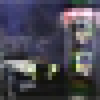 | 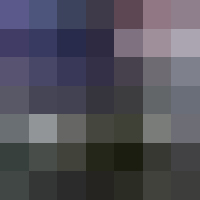 | 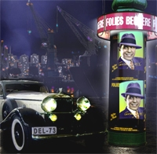 | |
| 1ere | 2eme | 3eme | 4eme |
Conclusion : La qualité, la taille en pixels et le poids en ko d'une image numérique sont directement proportionnels à sa Définition. Elle s'exprime en ppp : pixels par pouce carré. 72 ppp donnent une qualité écran. 300 ppp une qualité photographique.
| 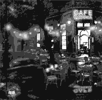 | 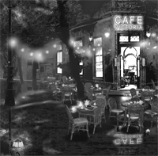 | 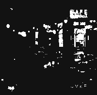 | ||||||||||||||||||||||||||||
| 1ere | 2eme | 3eme | 4eme | |||||||||||||||||||||||||||
| 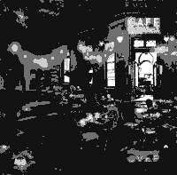 | 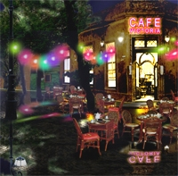 |
Par exemple si chaque pixel est codé sur 3 bits, il y
a 8 possibilités :
|
||||||||||||||||||||||||||||
| 5eme | 6eme | |||||||||||||||||||||||||||||
Conclusion : La qualité d'une image numérique dépend du nombre de couleurs qu'elle contient. Pour une qualité maximum travaillez en 16 ou 32 bits couleurs.
| 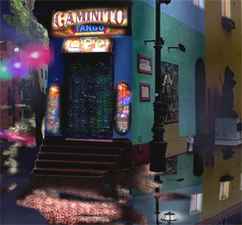 | |||
| 1ere | 2eme | 3eme | 4eme |
Conclusion : Le pourcentage de compression Jpeg optimal donne une image lisible pour un poids réduit. Ici le 60 % semble un bon compromis.
| 1ere | 2eme | 3eme | 4eme |
| 5eme | 6eme |
Conclusion : Le nombre de couleurs GIF optimal donne une image lisible pour un poids réduit. Ici le 32 couleurs semble un bon compromis.
| 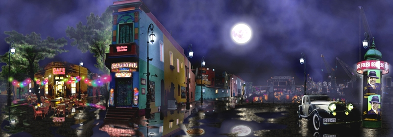 1ere |
| 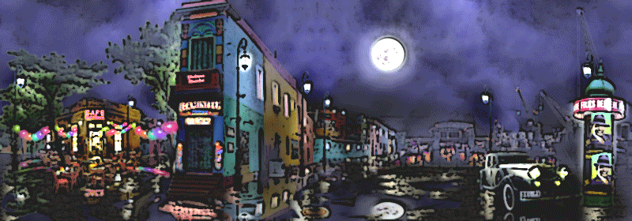 2eme |
 3eme - Testez le zoom à 500% sur cette image : on ne verra jamais les pixels ! |
Conclusion : Le format Jpeg sera utilisé pour les photographie, le format GIF pour les dessins BD , le format vectoriel SVG pour les logo, textes stylisés et les schémas technique
- Q6. Le calcul du poids
:
- Comptez le nombre de pixels en largeur et en hauteur et déduisez le nombre total de pixels qui composent l'image. ________________Pixels
- Observez et déduisez combien d'Octets sont utilisés pour coder toutes les couleurs de cette image. (Il faut laisser à chaque pixel la possibilité de prendre n'importe quelle couleur…) _________________Octets
- Calculez le poids en Octets de cette image. _________________Octets
Téléchargez le fichier BMP 24bits, vous pourrez ainsi vérifier la taille en kO...